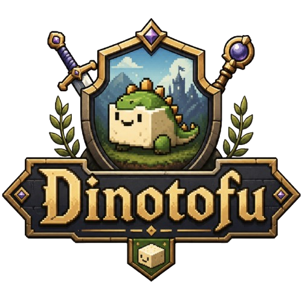

Dinotofu
L’aventure continue actuellement dans la version terminale.
Interface graphique en production
La nouvelle interface est encore en construction. Cet accueil reste volontairement léger pendant que la vraie application graphique est préparée.
Aucun moteur de partie n’est lancé en arrière-plan tant que tu restes ici.